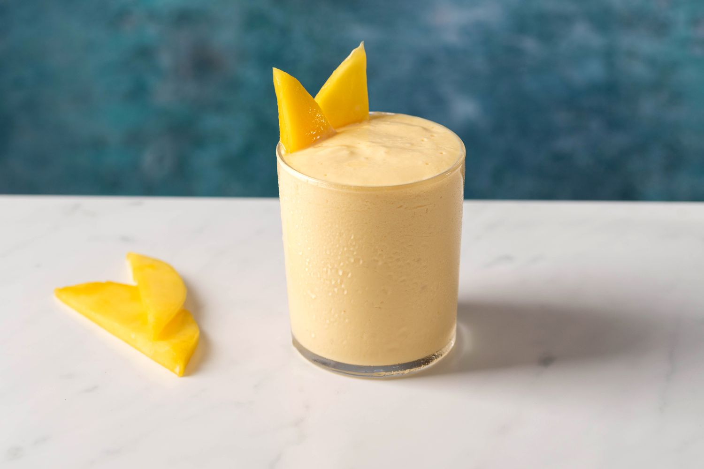

A Simple Mango Smoothie

Description
Here is how you make a very simple and smooth mango smoothie!
Ingredients
Two mangos - peeled, seeded, and sliced
Two bananas
Two cups vanilla yogurt
Two cups milk
Steps
Add mangos, banana (sliced in half), vanilla yogurt, and milk into a large blender.
Blend the ingredients until smooth. If the smoothie is too thick, proceed to add more milk as needed for a smoother consistency.
Serve immediately.